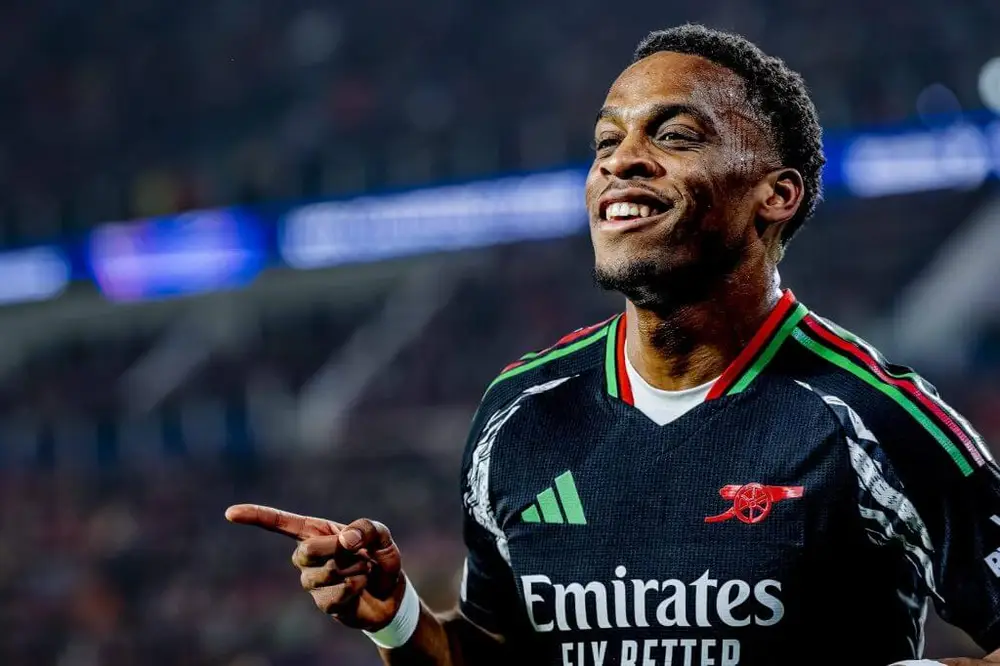

<article class="story-card compact">
    <a href="articles/fpl-gameweek-2-recap-2025-26.html" class="story-link">
        <div class="story-image-wrapper">
            
            <div class="story-overlay">
                <span class="story-category fpl-exclusive">📊 FPL RECAP</span>
            </div>
        </div>
        <div class="story-content-wrapper">
            <h2 class="story-headline">FPL Gameweek 2 Recap 2025/26: Fantasy Premier League Tips, Transfers, Rankings & Captain Picks</h2>
            <p class="story-summary">From explosive EPL fantasy performances to must-make Fantasy Premier League transfers, this detailed recap covers everything you need to boost your FPL rankings. With FPL differentials like Jack Grealish and Chelsea's attacking depth, plus injury updates on Saka and Palmer forcing quick decisions.</p>
            <div class="story-footer">
                <span class="story-date">📅 January 28, 2025</span>
                <span class="read-more">Read More →</span>
            </div>
        </div>
    </a>
</article>